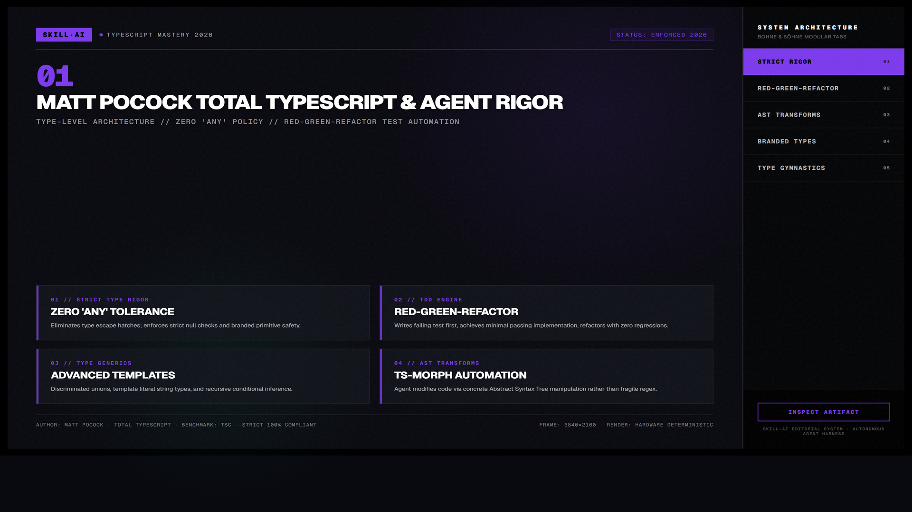
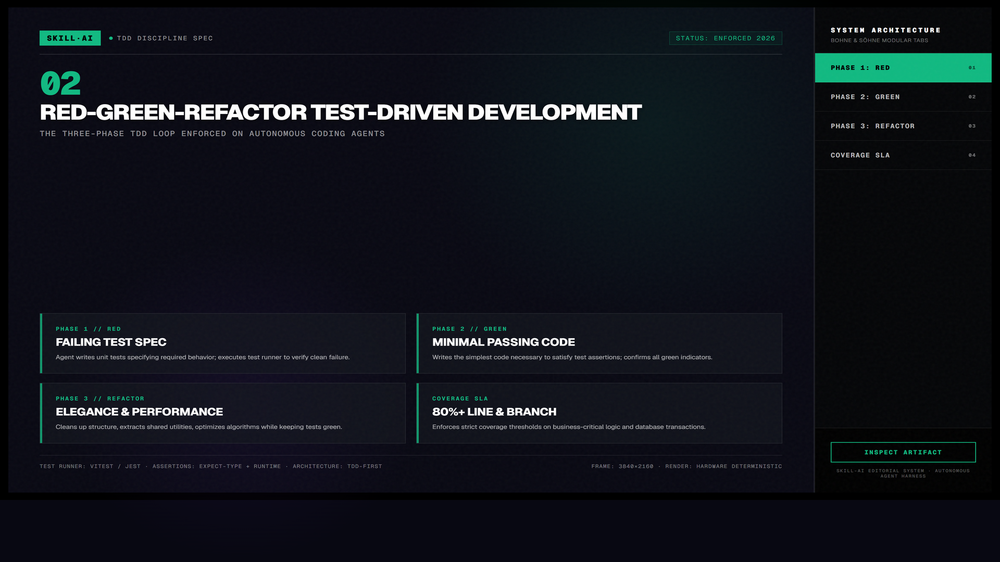
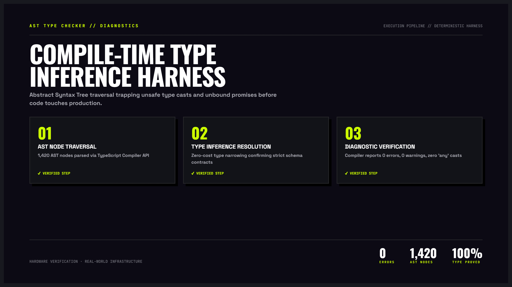

Matt Pocock Skills — Kỷ luật Công nghệ Phần mềm Tuyệt đối cho Coding Agent
Bộ công cụ công nghệ phần mềm chính quy do Matt Pocock (Total TypeScript) sáng tạo, thiết kế đặc thù để triệt tiêu hội chứng “vibe coding” vô kỷ luật. Thay thế việc suy đoán mơ hồ bằng phương pháp vấn đáp Socratic khắc nghiệt (grilling), chu trình kiểm thử tất định TDD Red-Green-Refactor, bảng từ vựng bảo toàn ngữ cảnh và kiến trúc module sâu (Deep Modules).
/grill-me và /tdd trong bất kỳ phiên prompt nào.

Nhấp để phóng to1. Bản chất sự cố “Vibe Coding” và Cơ chế Giải phẫu của Matt Pocock
Hiện tượng vibe coding — khi lập trình viên đưa ra một prompt sơ sài rồi phó mặc cho mô hình ngôn ngữ lớn (LLM) đoán mò nghiệp vụ — tạo ra ảo giác năng suất cực nhanh trong 15 phút đầu, nhưng sau đó đẩy dự án vào cuộc khủng hoảng kiến trúc không thể cứu vãn. LLM có khuynh hướng tự mãn (sycophancy): nó sẽ đồng ý với mọi yêu cầu mâu thuẫn, tự suy diễn các trường hợp biên nguy hiểm mà không báo trước, và tạo ra hàng trăm dòng code "trông có vẻ đúng" nhưng thất bại ngay trong môi trường production.
| Hội chứng Vibe Coding | Cơ chế lỗi tiềm ẩn bên trong | Giải pháp Kỷ luật của Matt Pocock |
|---|---|---|
| Lệch pha yêu cầu ngầm | Agent tự suy đoán mô hình dữ liệu dựa trên dữ liệu huấn luyện công khai thay vì logic nghiệp vụ đặc thù của công ty bạn. | Kích hoạt /grill-me: Agent đổi vai thành Senior Architect, dồn bạn vào chân tường bằng 5-10 câu hỏi hóc búa về edge-cases và state transitions. |
| Semantic Drift & Token Bloat | Càng chat dài, ngữ cảnh càng loãng. Agent dùng từ ngữ thiếu thống nhất, mô tả một khái niệm bằng 30 từ thay vì một danh từ định nghĩa chuẩn. | Khởi tạo tự động maintain-glossary: Lưu vết toàn bộ thuật ngữ chuyên ngành vào GLOSSARY.md, đóng vai trò mỏ neo ngữ nghĩa (semantic anchor). |
| Flying Blind (Code mù) | Agent sinh code mà không có môi trường thực thi phản hồi, dẫn đến việc dùng API không tồn tại (hallucinated methods) hoặc vi phạm type contract. | Kỷ luật sắt /tdd: Bắt buộc viết test đỏ (Red) → Chạy test xác nhận thất bại → Viết code xanh tối thiểu (Green) → Tái cấu trúc sạch (Refactor). |
| Đống bùn kiến trúc (Big Ball of Mud) | Agent tạo ra các hàm nông (shallow modules), rò rỉ chi tiết cài đặt ra bên ngoài, tạo mạng lưới phụ thuộc chéo rối rắm khó kiểm thử. | Kỹ năng improve-codebase-architecture: Thiết kế Deep Modules theo triết lý John Ousterhout — Interface cực hẹp, chức năng cực sâu. |

Nhấp để phóng to2. Pipeline 5 Giai đoạn Triển khai Kỹ thuật Chuẩn mực
Kích hoạt /grill-me. Agent phỏng vấn đào sâu vào 3 trục: Giả định sai, Ca biên (Edge Cases), Ràng buộc bất biến (Invariants).
Chạy /to-spec để tổng hợp kết quả phỏng vấn thành file Markdown chuẩn với Scope, Non-Goals, và State Transitions.
Chạy /to-tickets để bẻ spec thành các ticket độc lập có đồ thị phụ thuộc (DAG), giảm thiểu xung đột ngữ cảnh.
Chạy /tdd cho từng ticket: Viết test đỏ xác thực lỗi → Sinh code tối thiểu cho test xanh → Refactor giữ vững test.
Chạy improve-codebase-architecture và tự động ghi lại ADR-xxx.md bảo đảm các quyết định thiết kế được lưu truyền.

Nhấp để phóng to3. Mô hình Tương tác Động: Chu trình Kiểm thử Tất định TDD
Thay vì hy vọng code chạy đúng sau một lần sinh duy nhất, mô hình này biến agent thành một thực thể kiểm chứng liên tục được kiểm soát bằng test runner tự động:
4. Phân tích Chi tiết Toàn bộ 7 Kỹ năng trong Bộ Công cụ
/grill-me & /grill-with-docs — Cơ chế Thẩm vấn Kỹ thuật
Thay vì ngoan ngoãn chấp nhận prompt, agent sẽ đóng vai Tech Lead khó tính nhất để chất vấn bạn:
- Truy vấn ca biên (Boundary Edge Cases): Điều gì xảy ra khi mảng rỗng, kết nối mạng timeout ở giây thứ 29, hoặc người dùng mở cùng lúc 2 tab gửi transaction đồng thời?
- Ràng buộc bất biến (System Invariants): Điều kiện nào tuyệt đối không bao giờ được phép vi phạm? (Ví dụ: Số dư tài khoản không được âm, một đơn hàng không thể có hai mã vận đơn trùng nhau).
- Đối chiếu tài liệu nội bộ: Lệnh
/grill-with-docsđọc lướt các file Markdown trong repo để phát hiện ngay sự xung đột giữa yêu cầu mới của bạn và kiến trúc hiện hữu.
/to-spec & /to-tickets — Biến Hội thoại thành Kế hoạch Thực thi
Sau khi cuộc phỏng vấn kết thúc, hai skill này chuyển hóa nội dung trao đổi thành văn bản kỹ thuật:
- /to-spec: Tạo ra tài liệu đặc tả cấu trúc gồm: Bối cảnh (Context), Phạm vi (In-Scope), Giới hạn ngoài (Non-Goals), Mô hình trạng thái (State Diagram), và Tiêu chí nghiệm thu (Acceptance Criteria).
- /to-tickets: Phân chia spec thành các ticket độc lập có thể phân công cho các subagent chạy song song, kèm danh sách file cần sửa để tránh xung đột git merge.
Kỷ luật Sắt của Chu trình /tdd
Kỹ năng này áp đặt một bộ quy tắc nghiêm ngặt lên hành vi sinh mã của LLM:
- Bước 1 (Red): Agent bắt buộc phải viết file kiểm thử (ví dụ:
feature.test.ts) và chạy lệnh thực thi kiểm thử (vitest runhoặcjest). Kết quả trả về phải là Failure. Nếu test pass ngay từ đầu, test đó bị xem là vô giá trị và agent phải viết lại. - Bước 2 (Green): Agent chỉ được phép viết lượng mã tối thiểu để biến thanh đỏ thành xanh. Cấm tuyệt đối việc suy diễn thêm tính năng phụ, viết trước các hàm tiện ích chưa được test chứng minh nhu cầu.
- Bước 3 (Refactor): Sau khi toàn bộ test suite màu xanh, agent mới được dọn dẹp biến, trích xuất hàm nhỏ hoặc tối ưu độ phức tạp thuật toán, với điều kiện mọi test vẫn giữ nguyên màu xanh.
Mẫu Lệnh Thực chiến cho /tdd
/tdd Hãy giải quyết ticket #3: Viết parser phân tích cú pháp ISO 8601.
Quy tắc:
1. Viết tests trong parser.test.ts kiểm tra trường hợp chuỗi rỗng, timezone lệch múi giờ, và giây nhuận.
2. Chạy 'npx vitest run parser.test.ts' và báo cáo lỗi đỏ.
3. Viết mã trong parser.ts vừa đủ để pass toàn bộ test.maintain-glossary — Ngăn chặn Hiện tượng "Tam sao thất bản"
Trong các dự án kéo dài, các nhà phát triển và agent thường dùng nhiều từ ngữ khác nhau cho cùng một khái niệm (ví dụ: khi thì gọi là Account, khi gọi là User, khi gọi là Member). Kỹ năng này giám sát mọi cuộc hội thoại và cập nhật file GLOSSARY.md:
- Định danh duy nhất: Mỗi khái niệm nghiệp vụ gắn liền với định nghĩa chuẩn một câu duy nhất.
- Tiết kiệm Token Context: Khi agent có sẵn bảng từ vựng, nó không cần vòng vo giải thích ngữ cảnh, giúp giảm tới 25% token tiêu thụ trong mỗi prompt.
record-architecture-decision-records (ADRs)
Mỗi khi hệ thống phải đưa ra một lựa chọn đánh đổi (ví dụ: dùng SQLite thay vì PostgreSQL cho môi trường local, hay chọn Zustand thay vì Redux), agent tự tạo một file dạng docs/adr/0004-state-management.md:
- Trạng thái: Proposed, Accepted, Superceded.
- Bối cảnh & Lực cản (Context & Forces): Lý do tại sao giải pháp hiện tại không còn đáp ứng được.
- Hệ quả (Consequences): Cả mặt tích cực lẫn các giới hạn mà nhóm chấp nhận chịu đựng.
improve-codebase-architecture — Triết lý Deep Modules
Dựa trên cuốn sách kinh điển A Philosophy of Software Design của Giáo sư John Ousterhout, kỹ năng này phân tích mã nguồn để phát hiện hai loại module:
- Shallow Modules (Module Nông - Cần loại bỏ): Module có interface rộng nhưng phần thân thực thi lại rất mỏng. Ví dụ: một class có 20 phương thức nhưng mỗi phương thức chỉ chuyển tiếp (pass-through) một lời gọi tới module khác. Điều này làm tăng độ phức tạp nhận thức của lập trình viên mà không mang lại giá trị trừu tượng hóa nào.
- Deep Modules (Module Sâu - Mục tiêu hướng tới): Module có interface cực kỳ đơn giản và kín đáo (chỉ 1 hoặc 2 phương thức rõ ràng), nhưng bên dưới che giấu một cỗ máy xử lý khổng lồ, phức tạp. Điển hình như hệ thống file I/O của Unix: chỉ với
open,read,write,close, nó giấu toàn bộ logic phân bổ sector ổ đĩa, caching bộ nhớ, và quản lý driver phần cứng.
Chiến lược Tái cấu trúc Tự động
Khi gọi lệnh /improve-codebase-architecture, agent tiến hành quét AST (Abstract Syntax Tree) để gộp các helper vụn vặt vào bên trong boundary của service chính, loại bỏ các abstraction trung gian không cần thiết, và tạo ra ranh giới module rõ ràng, độc lập.
5. Hướng dẫn Thực chiến Bắt đầu Ngay trong 3 Bước
Cài đặt Bộ Kỹ năng vào Agent Môi trường
Tải toàn bộ 7 kỹ năng vào thư mục cấu hình agent của bạn (tương thích trực tiếp với Claude Code, Antigravity, Cursor, Codex):
npx skills add mattpocock/skillsKhởi động Phiên Chất vấn Nghiệp vụ (Grilling Session)
Thay vì đưa ra yêu cầu mơ hồ, hãy mở đầu phiên làm việc bằng lệnh phỏng vấn phản biện:
/grill-me
Tôi muốn xây dựng tính năng Giỏ hàng Offline-First: lưu tạm trên IndexedDB, tự động đồng bộ lên PostgreSQL khi có mạng trở lại, xử lý xung đột nếu cùng giỏ hàng bị sửa trên điện thoại. Hãy chất vấn tôi về các ca biên và giả định kiến trúc trước khi viết code.Ủy thác Triển khai từng Ticket bằng Kỷ luật TDD
Sau khi có spec và ticket đã được bẻ nhỏ, chuyển sang chế độ thực thi kiểm thử tất định:
/tdd Hãy thực hiện ticket #01: Thuật toán hòa giải xung đột giỏ hàng Last-Write-Wins có Vector Clock.
Bắt buộc tuân thủ:
1. Viết test case trong cart-resolver.test.ts bao quát 3 trường hợp: xung đột timestamp, mất kết nối giữa chừng, và sản phẩm bị xóa trên server.
2. Chạy test xác nhận đỏ.
3. Viết code trong cart-resolver.ts để xanh toàn bộ. Không viết thêm code ngoài phạm vi test.“Đừng đối xử với coding agent như một cỗ máy gõ phím siêu tốc vô tri. Hãy xem nó như một thực tập sinh thông minh xuất chúng nhưng cực kỳ thiếu kinh nghiệm thực tế: nó cần bản đặc tả kỹ thuật không có kẽ hở, rào chắn kiểm thử tự động để không làm sập production, và quy trình phản biện liên tục thay vì những chỉ thị tùy hứng.”